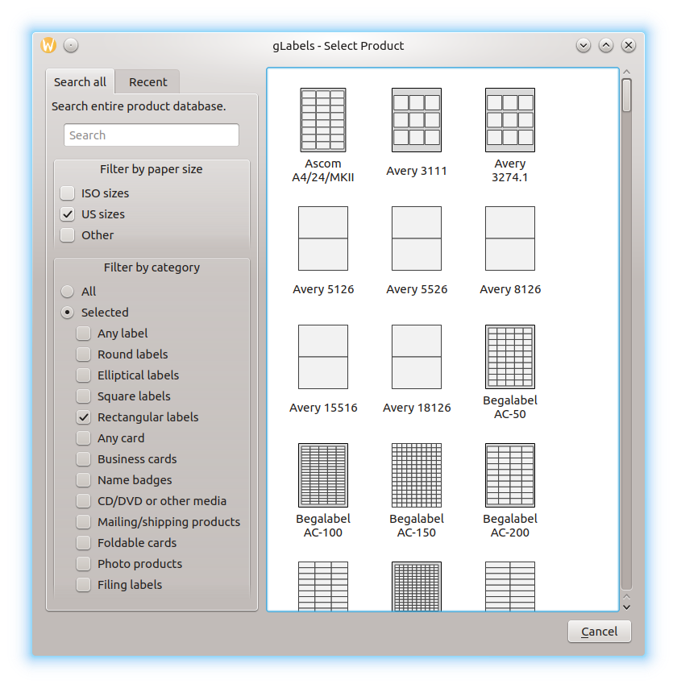

Creating a New gLabels Project
To create a new gLabels project, choose File ➡ New… in the main window.
The gLabels – Select Product window appears. Here you can choose a template for your new project. If you have already saved projects, the Recent tab is active, and recently used templates are shown. To be able to choose from all available templates, click on the Search All tab, as shown in the following illustration:

When searching all templates, you have some options to filter the template collection. You can Filter by paper size or Filter by category. For the latter, click on the Selected radio button, and then click on one or more categories that might be relevant to you. Besides that, you can use the Search field to find templates. Just type something like vendor name, or whatever you know about a template you like to use. Your input will be applied in addition to the filters already selected, if any.
From this point of view, not all of the template properties are shown. These can be viewed later in the Properties panel (see Changing Basic Project Properties).
Just click on a template to create the new project. It will be opened in a new window, to prevent you from losing unsaved changes in the previously opened window.